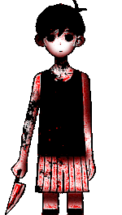
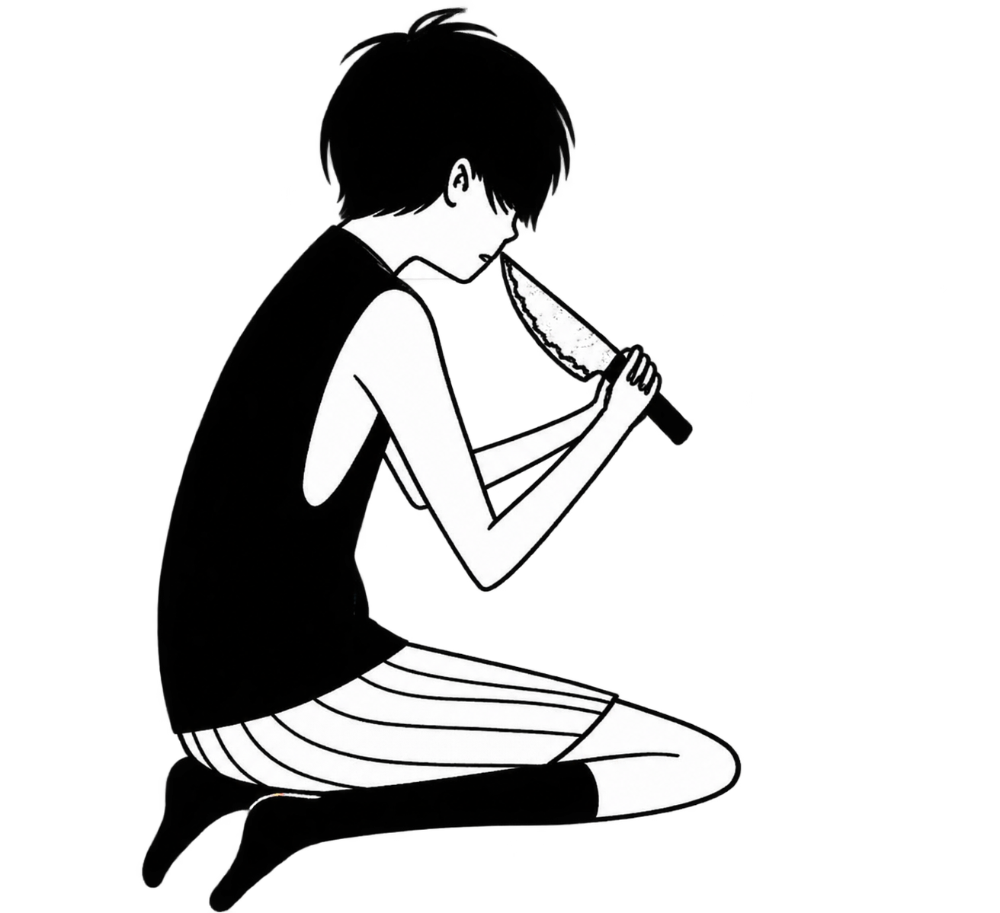
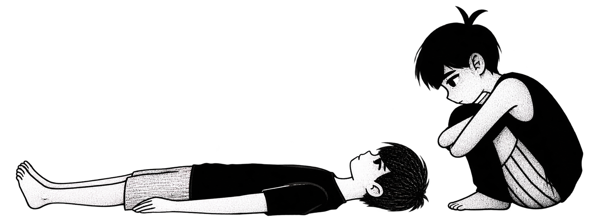

WELCOME TO MY WORLD
HALLO
Kamu sedang terpuruk ?, let me tell you something

Jangan sendirian
Kegelapan
Jangan terlalu nyaman dengan dunia yang gelap.
Banyak suara suara motivasi yang di lontarkan oleh
iblis, dan ku harap kau tidak
mendengarkannya.
"_"
Jangan sendirian
Kegelapan
Jika sudah terlanjur mendengar, segera lah bunuh dirimu.
"_".

JANGAN SALAH PAHAM
Bunuh
dirimu.
Maksudku ketika aku berkata "bunuh dirimu"...
SCROLL KE BAWAH
BUKAN DIRIMU
Bunuhlah
karaktermu.
Bunuh karakter yang selama ini kamu mainkan. Karakter yang selalu takut untuk melangkah. Karakter yang takut untuk menghadapi neraka dunia.

SCROLL LAGI

MASA LALU
Terima
masa lalumu.
Tidak semua hal yang terjadi harus dilupakan.
Beberapa hanya perlu diterima sebagai bagian
dari perjalananmu.
LANJUTKAN